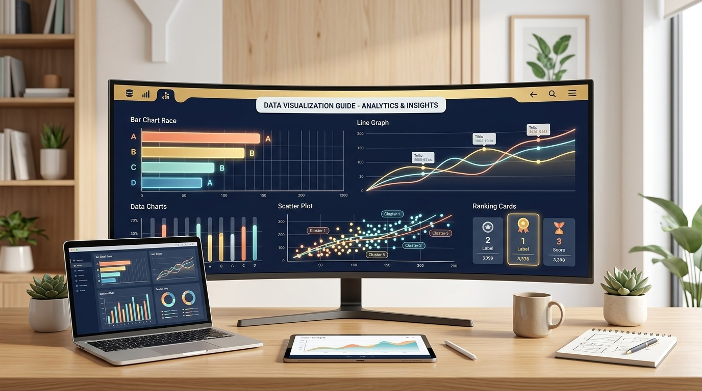
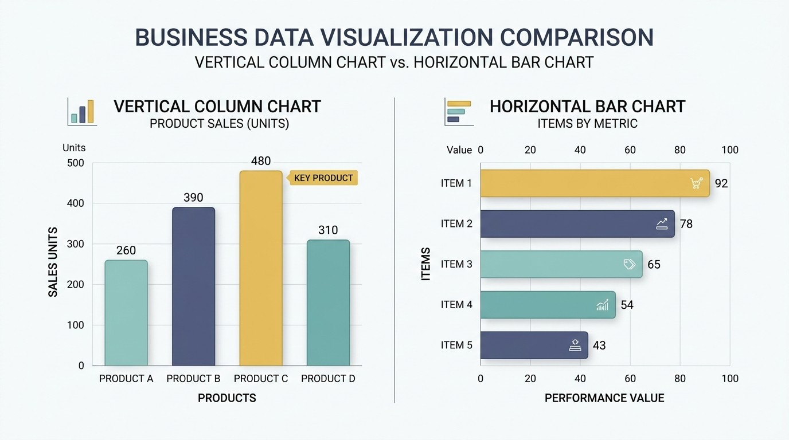
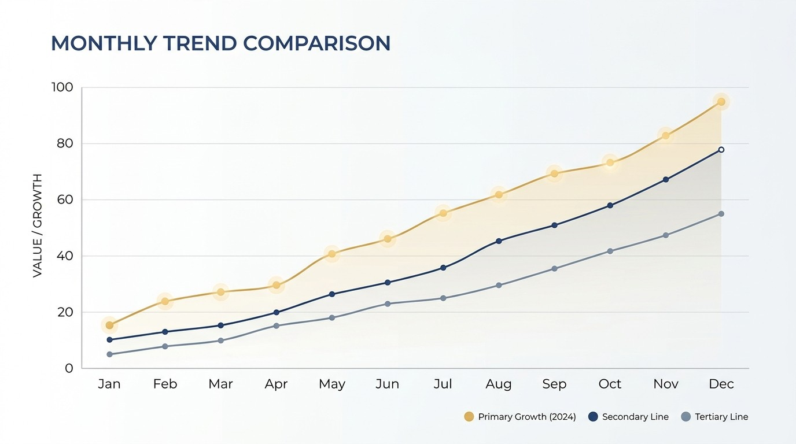
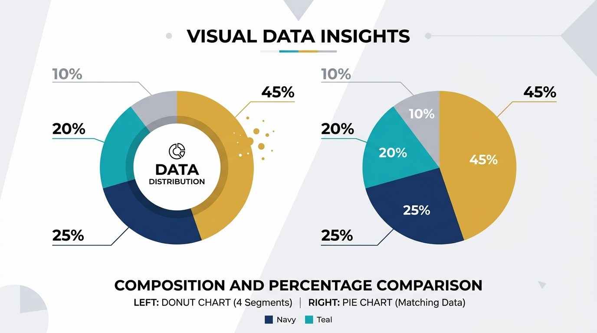
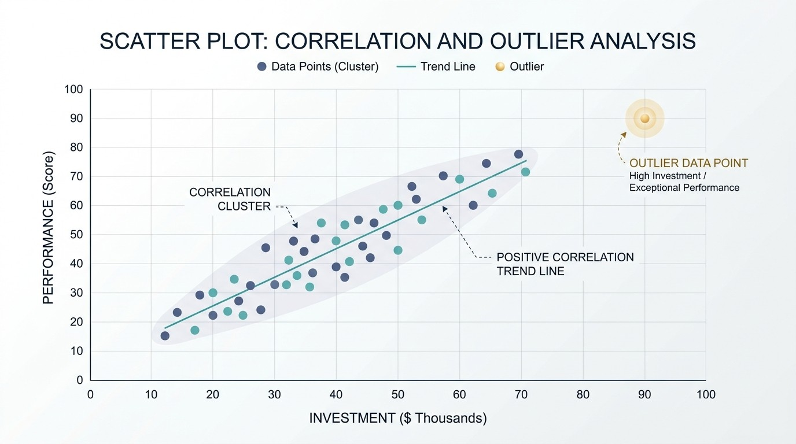
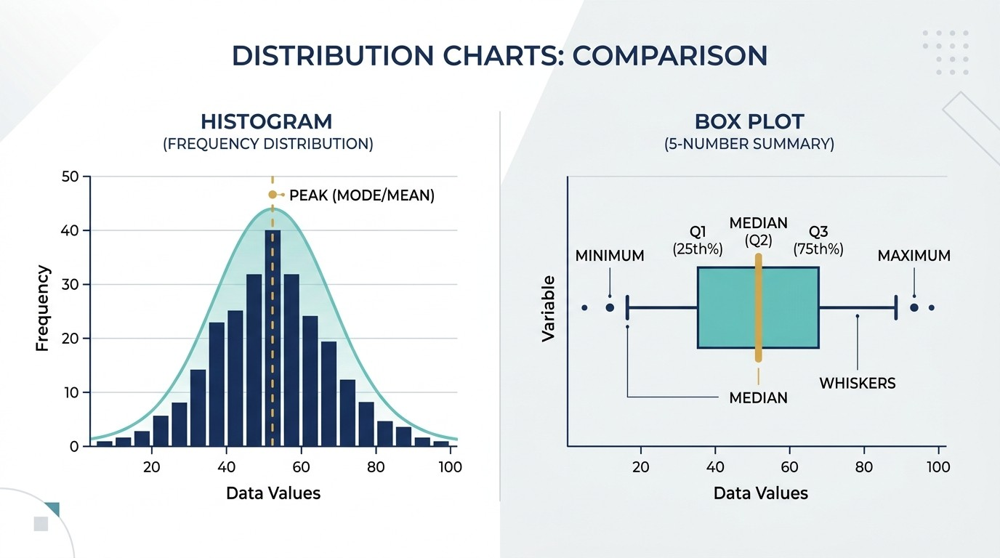

データ可視化の基本と手法｜初心者でも迷わないグラフの選び方と伝わるデザイン原則

「会議資料のグラフを作ったけれど、どこを見ればいいか分からないと言われた」「棒グラフと折れ線グラフ、どちらを使うべきかいつも迷う」――そんな経験はありませんか？
どれほど正確なデータであっても、数字の羅列のままでは相手の心に届きません。人間の脳は、文字や数値よりも視覚的なパターン（長さ・傾き・色・動き）を一瞬で認識する仕組みを持っています。データ可視化（データビジュアライゼーション）の目的は、単にきれいに飾ることではなく、「伝えたいメッセージを直感的に届け、意思決定を後押しすること」にあります。
この記事では、データ可視化ツールの開発・運営を行っている立場から、初心者でも迷わない「目的別グラフ選びの早見表」や、実務で即座に使える4つのデザイン原則、そしてプレゼンやSNSで圧倒的に注目を集める「動くグラフ（データアニメーション）」の活用法まで体系的にまとめました。
データ可視化（データビジュアライゼーション）とは？
データ可視化とは、数値や文字などのテキスト情報を、グラフや図表、マップ、アニメーションなどの視覚的要素に変換する手法のことです。
データ可視化のゴールは「データをそのまま見せること」ではありません。
「データの中に潜むパターンや異常値、結論を浮き彫りにし、見る人が次の行動を起こせる状態にすること」が本来の目的です。
実務や情報発信においてデータ可視化を行う大きなメリットは、主に次の3点に集約されます。
- 理解スピードの圧倒的な向上：脳は視覚情報をテキストの約6万倍の速度で処理できると言われています。表を1分眺めるよりも、適切なグラフを3秒見るほうが直感的に状況を把握できます。
- 外れ値やトレンドの早期発見：売上の急落や急伸、特定層の偏りなど、Excelの表計算では見落としがちな変化をひと目で察知できます。
- 説得力と合意形成の加速：言葉だけの説明に比べて客観的な根拠が明確になり、提案の承認や意思決定がスムーズに進みます。
【目的別】迷わないグラフの選び方早見表
グラフ選びで最もありがちな失敗は、「ツールで作りやすいから」「なんとなく見栄えが良いから」という理由で形式を選んでしまうことです。
正しいグラフ選びは、「自分はこのデータで何を一番伝えたいのか？」というメッセージ（目的）から逆算して決めます。以下の早見表を基準にしてください。
| 伝えたい目的 | 適したグラフ形式 | 特徴・向いている理由 | 代表的なデータの例 |
|---|---|---|---|
| 比較（大小・順位） | 縦棒グラフ / 横棒グラフ | 棒の長さの違いで、直感的に量の大小を比較できる | 商品別売上、店舗別来店数、アンケート回答数 |
| 推移（時間の変化） | 折れ線グラフ / 面グラフ | 左から右への傾きで、時系列の増減や速度を把握できる | 月別売上推移、Webアクセス数、株価、気温変動 |
| 構成比（内訳・割合） | 円グラフ / 100%積み上げ棒 | 全体（100%）に占める各要素の比率を視覚化できる | 市場シェア、予算配分、年齢層の構成割合 |
| 相関（2つの関係性） | 散布図 / バブルチャート | 2つの変数の位置関係から、相関関係や外れ値を可視化 | 広告費と売上、気温とアイスの販売数、身長と体重 |
| 分布（ばらつき） | ヒストグラム / 箱ひげ図 | 区間ごとの度数から、偏りや散らばり具合を捉える | テストの点数分布、年収分布、配送時間のばらつき |
| 順位変動×推移 | バーチャートレース / 線グラフレース | 時間経過に伴う順位の入れ替わりをアニメーションで表現 | 世界GDPランキングの変遷、人気キャラクター順位推移 |
代表的なグラフの特徴と具体的な使い分け
実務で頻繁に使われる主要なグラフについて、それぞれの長所と短所、使い分けのポイントを深掘りします。
1. 棒グラフ（縦棒・横棒）：迷ったら選ぶ基本の型

棒グラフは、人間の目が最も得意とする「長さの比較」を利用するため、誤解が生まれにくい最も安全で強力なグラフです。
- 縦棒グラフ：時系列の比較（年度別売上など）や、項目数が7個前後の場合に最適です。
- 横棒グラフ：ランキング表示や、「株式会社〇〇〇〇」のように項目名が長い場合に効果的です。縦軸に文字が入りやすいため、文字が斜めになって視認性を損なうのを防げます。
2. 折れ線グラフ：時間の流れと勢いを伝える

折れ線グラフは、データの「傾き（変化の激しさ）」を見るためのグラフです。日次、月次、年次など時系列データは原則として折れ線グラフを選びます。
比較する線の数は最大でも3〜4本以内に抑えましょう。7本も8本も線が重なると「スパゲッティチャート」と呼ばれ、どの線がどれを指しているのか判別不能になります。多項目を比較したい場合は、後述するアニメーショングラフが有効です。
3. 円グラフ：割合を伝える際の落とし穴

円グラフは「全体を100%とした内訳」を伝えるのに広く親しまれていますが、実は人間は「角度」や「面積」の微妙な差を直感的に識別するのが苦手です。
- 項目数は最大5個までに絞り、残りは「その他」にまとめる。
- 時計の12時の位置から、構成比の大きい順に時計回りで並べる。
- 複数の円グラフを並べて「昨年と今年の構成比の差」を比較しようとしない（差が分かりにくいため、その場合は100%積み上げ棒グラフを使う）。
4. 散布図：因果関係のヒントを見つけ出す

縦軸と横軸に異なる2つの数値を設定し、データを点で打つグラフです。「広告費を増やすと売上も増えているか（正の相関）」「価格を上げると購入数は減るか（負の相関）」といった仮説を検証する際に欠かせません。全体の集団から大きく外れた特異なデータ（外れ値）も見つけやすくなります。
5. ヒストグラム / 箱ひげ図：ばらつきと偏りを捉える

ビジネスの現場で「平均値」だけを信用すると、一部の極端なデータに引っ張られて実態を見誤ることがあります。データのばらつきを捉えるには以下の2つが最適です。
- ヒストグラム（度数分布図）：横軸に数値の区間（階級）、縦軸に該当する人数や個数（度数）を取る棒状のグラフ。「どの価格帯の商品が最も買われているか」「テストの点数が山型か二極化しているか」など、データの形そのものを把握できます。
- 箱ひげ図：最大値・最小値・中央値（メディアン）・四分位数（上位・下位25%のライン）を箱とヒゲでコンパクトに表現するグラフ。部署ごとの残業時間や店舗ごとの客単価など、複数グループの「ばらつき度合い」を省スペースで横並び比較するのに威力を発揮します。
相手に一瞬で伝わる！データ可視化の4大デザイン原則
グラフの種類が正しくても、デザインが乱れていると読み手にストレスを与えます。専門的なデザイナーでなくてもすぐに実践できる4つの鉄則を解説します。
良いグラフとは「何かを付け足したもの」ではなく、「不要なノイズを限界まで削ぎ落としたもの」です。不要な枠線、過剰な目盛り線、派手すぎる背景色はすべて削除します。
原則1: 棒グラフの起点は必ず「ゼロ（0）」にする
棒グラフは「長さの比率」で比較するため、起点がゼロでないとわずか2%の差が5倍の差に見えるような錯覚が生じます。これを行うと、見る人に「意図的なデータ改ざんや誇張ではないか」という不信感を与えてしまいます。
原則2: 配色は意味を持たせる（強調色は1色に絞る）
カラフルすぎるグラフは視線が散らばります。基本は「グレーや落ち着いたベースカラー」で全体を描き、最も注目してほしい自社の数値や特定の項目だけをアクセントカラー（青やオレンジなど1色）で塗ります。これだけで、説明を聞かなくても相手の目が自然と結論に向きます。
原則3: タイトルで結論を言い切る（アクションタイトル）
グラフのタイトルに「2026年度 製品別売上推移」とだけ書くのはもったいない方法です。
「製品Aの売上が前年比150%と急伸し、全社売上を牽引」のように、グラフから読み取ってほしい結論をそのままタイトルに掲げることで、プレゼンでの伝達速度が劇的に上がります。
原則4: 凡例を遠くに置かず、データの近くに直接配置する
グラフの右下や上部に小さな四角で「■ 商品A ■ 商品B」と凡例を置くと、見る人はグラフ本体と凡例の間を何度も視線移動しなければならず疲れてしまいます。可能であれば、折れ線の終端や棒グラフの横に直接ラベルを配置するのが親切な設計です。
避けるべきデータ可視化の3大NG表現
ビジネスや教育の場で今なお見かけるものの、現代のデータビジュアライゼーションにおいて「やってはいけない」とされる代表例です。
- 3D（立体）グラフの多用：立体化すると手前にあるデータが実際より大きく見え、奥にあるデータが小さく見えるため、正確な比較が物理的に不可能になります。ビジネスのグラフは常に2D（平面）で表現するのが国際的な標準です。
- 多すぎる二重軸（2軸グラフ）：左軸に「売上（億円）」、右軸に「前年比成長率（%）」を置く2軸グラフは、交差する点に意味があるように誤認されがちです。可能であれば上下に2つのグラフを並べる配置を推奨します。
- 装飾目的の意味のないイラストやグラデーション：データの把握に関係のないアイコンやギラギラした光彩効果は、肝心のデータの変化を覆い隠してしまいます。
次世代の表現手法：「動くグラフ」で記憶に残す
近年、静止画のグラフだけでなく、時間の流れをアニメーションで表現する「動くグラフ（データアニメーション）」が爆発的な注目を集めています。
YouTubeの教育・解説動画、SNS（XやInstagram）、企業の年次報告動画、大型スクリーンのある展示会や社内表彰式など、「人の目を惹きつけ、離さない」ことが求められる場面で圧倒的な効果を発揮します。
1. バーチャートレース（棒グラフレース）
各項目の棒グラフが、時間の経過とともに順位を競い合うようにリアルタイムで入れ替わるアニメーションです。
「過去30年間の世界IT企業時価総額ランキング」や「歴代アニメ興行収入の推移」のように、「誰がいつ台頭し、誰が追い抜かれたのか」というドラマ性を動画として直感的に伝えることができます。
Excelの表を貼り付けるだけで、インストールや会員登録なしで滑らかな動く棒グラフ動画（MP4/WebM）を書き出せます。
2. 線グラフレース（折れ線グラフレース）
折れ線グラフが左から右へと伸びていき、複数の指標がどのように加速・減速していったかを追体験できるアニメーションです。
通常の折れ線グラフでは全体の結果が最初から見えてしまいますが、線グラフレースなら「中盤からの急激な伸び」や「デッドヒートの緊迫感」を視聴者に共有できます。
よくある質問（FAQ）
棒グラフの起点をゼロ以外にしてはいけないのはなぜですか？
棒グラフは「棒の長さ（面積）」そのもので数値の大きさを比較するグラフだからです。途中を省略したり起点をゼロ以外に設定すると、わずか数パーセントの差が何倍もの差に見えてしまい、意図的な印象操作や誤認を招く原因になります。微小な差の変化を見せたい場合は、折れ線グラフを採用するか、省略波線を明示してください。
円グラフを使ってはいけない場面はどのようなときですか？
項目数が6個以上ある場合や、構成比の差がわずかで角度の大小が判別しづらい場合です。また、時系列の変化を比較したいときにも円グラフは不向きです。このような場合は横棒グラフや100%積み上げ棒グラフを使うと正確に数値を伝えられます。
動くグラフ（データアニメーション）はどんな場面で効果的ですか？
「時系列での順位の逆転劇」や「長期間にわたる成長スピードの競い合い」を見せたい場面で最も効果を発揮します。静止画の折れ線グラフでは線が交差して見づらくなる複雑なデータでも、時間の経過とともに動くことでドラマチックに伝わり、社内プレゼンやSNS・動画プラットフォームでの視聴維持率が大幅に向上します。
データ可視化ツールはExcelやPowerPointだけで十分ですか？
定型的な社内資料であればExcelやPowerPointで十分対応可能です。ただし、目を引くアニメーション動画を作りたい場合や、SNSや動画投稿で差別化したい場合、ブラウザだけで動画（MP4/WebM）として書き出せるGraphRace Studioのような特化型Webツールを組み合わせると制作時間を大幅に短縮できます。
まとめ
データ可視化において最も大切なポイントを振り返ります。
- 伝えたい「目的・メッセージ」を明確にする 比較なのか、推移なのか、割合なのか。目的が決まれば、選ぶべきグラフは自ずと1つか2つに絞られます。
- デザインの引き算を徹底する 余計な装飾や目盛り線を省き、起点ゼロを守り、伝えたい箇所だけにアクセントカラーを使います。
- 時系列やストーリーを伝えるなら「動くグラフ」を取り入れる 静止画では表現しきれない順位の入れ替わりや成長スピードは、アニメーションを活用することでより直感的に相手の記憶に残せます。
まずは次回作成する資料のグラフで、色数を絞ったりアクションタイトルを付けたりすることから試してみてください。それだけで、周囲の反応や理解のスピードが大きく変わるはずです。